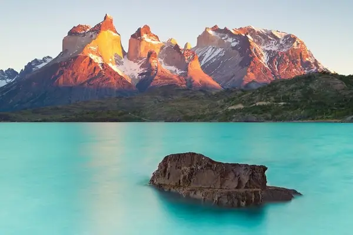
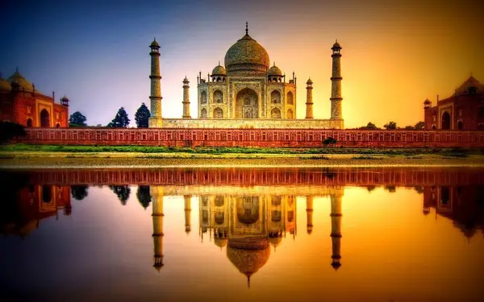

The 20 Most Beautiful Countries in the World.
20. Nepal
Pokhara is the real jaw-dropper as it is looked upon by some of the tallest mountains on earth, in the Annapurna massif.

19. Autralia
Australia has 16,000 miles of coastline, boasting some of the most beautiful beaches in the world. The Great Barrier Reef and Island of Tasmania
18. Philippines
It's made up of over 7000 stunning islands in the Pacific Ocean! Palawan in particular has been called the most beautiful island in the world!

17. Norway
The Northern Lights taking in these stunning sights, may just start your mind playing Edvard Hagerup Grieg in spontaneous celebration!
16. Brazil
It is unsurprising that there are scenic highlights. Foremost is undoubtedly the unparalleled Amazon Rainforest and Amazon River.

15. Chile
Last Hope Fjord one of the most beautiful in the world, and Atacama desert is astonishing because it is the driest non-ice desert on Earth.

14. India
Home to stunning places like Rajasthan and Goa, India has everything from tropical beaches to the glacier capped Himalayas.
13. Uganda
Though a small country, it is the starting point of one of the most amazing rivers in the world – and its very longest - the Nile.
12. Switzerland
Europe's mountain nation encompasses the very most beautiful parts of the Alps. The Matterhorn and the Bernese Oberland

11. Canada
The Baffin island mountains are known by few but are totally unmissable travel highlights, the country has the longest coastline in the world.

10. Kenya
The country has been rated in the top 3 wildlife countries on Earth, and Mount Kenya is the second tallest mountain on the continent.

9. Italy
Probably the most beautiful country in all of Europe, Italy is one of the world's great tourist destinations for a reason.
8. Tanzania
Lake Natron and Lake Manyara, Zanzibar, the Spice Islands, Dar Es Salaam and a million more, Tanzania is almost beyond belief.

7. Columbia
Colombia deserves its spot! It is one of the most biodiverse countries in the world, due in part to its incredible altitude differences within the tropics

6. Argentina
She may have wanted the country to hold back its tears, but it's pretty certain Evita shed a few when considering its incredible beauty.
5. Namibia
Desert nation of Africa is hauntingly beautiful. Germanic influence is evident, which is one of the world's natural treasure troves.

4. China
Had some of its finest scenery. The Mekong River is one of the most extraordinary rivers in the world, arising in the vast Tibetan Plateau.
3. New Zealand
The "World's Most Beautiful Island-Nation" is so stunning that it even makes the Top 3 for Beautiful Countries. Such a scenically magnificent place
2. United States of America
From the jaw dropping Yosemite to the awesomeness of New York City, few countries can compete with what's on offer in America.
1. South Africa
This setting is on a coastline hailed as the most beautiful on earth. In fact the country has three of the world's ten most beautiful coastal drives.